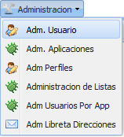
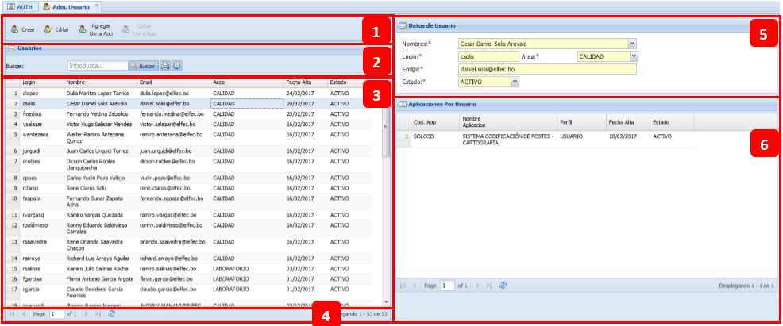
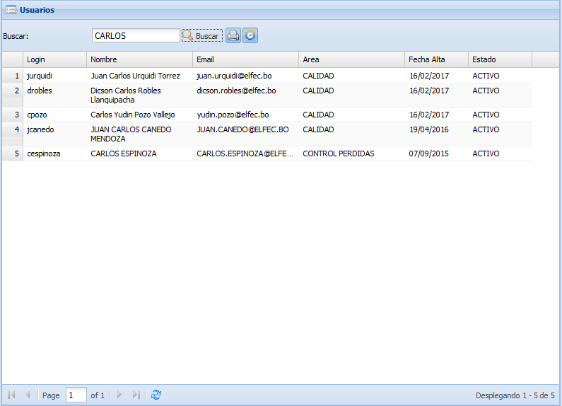
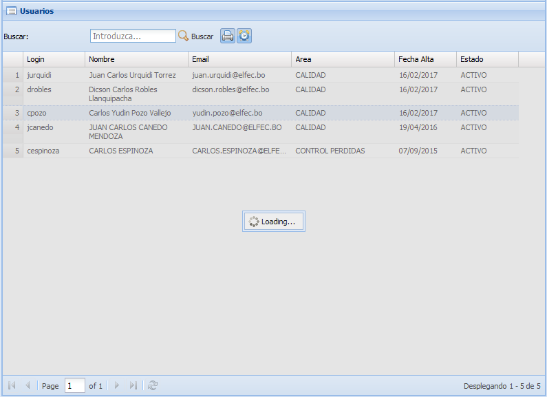
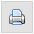
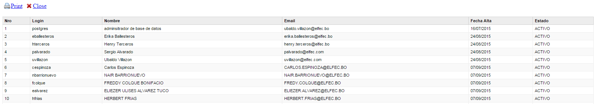
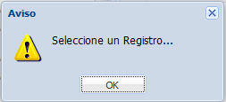
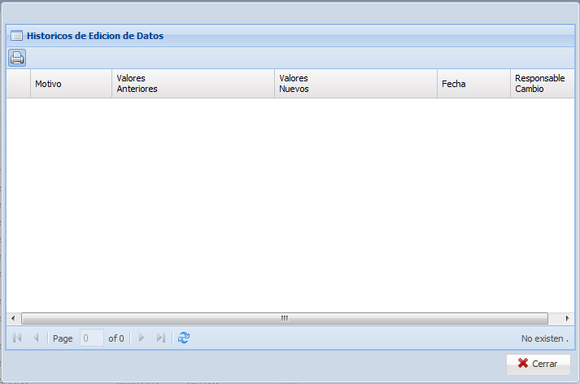
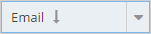
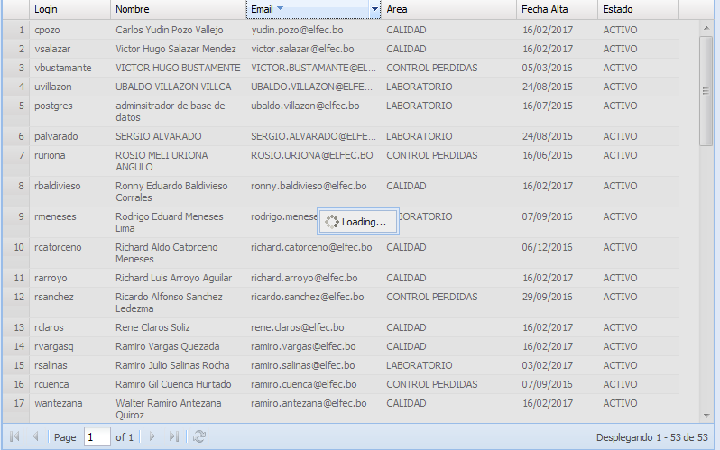

Se ingresa mediante:

Posee las siguientes secciones:

1: Opciones del Adm. Usuario como ser: Crear, Editar, Agregar Usr a App y Quitar Usr a App.
2: Sección de busqueda, donde se introducen los criterios para realizar busqueda en el contenido del grid.

Para que limpie el filtro y que muestre todos los datos se debe solo borrar el valor introducido y hacer click en el boton BUSCAR:

Mostrando todos los datos existentes.
La opcion de impresion :

Para visualizar los historicos mediante se debe seleccionar un registro de usuario inicialmente caso contrario:

Una vez seleccionado el usuario se visualizara:

3: Sección del grid, donde se muestran todos los usuarios existentes en la Base de Datos, con la opciones:
 Ordenar de forma ASC el grid de acuerdo a este campo seleccionado.
Ordenar de forma ASC el grid de acuerdo a este campo seleccionado.
Ordenar de forma DESC el grid de acuerdo a este campo seleccionado.
Cada columna posee la propiedad de ordenarse ASCENDENTE o DESCENDENTE solo se debe hacer click sobre la cabecera de la columna:

4: Paginacion del grid.
5: Formulario de usuario, donde se visualizan mas detalles del usuario. (Campos con asterisco son obligatorios)
6: Grid relacion usuario con las aplicaciones, se visualiza de acuerdo al usuario seleccionado las aplicaciones a las cuales tiene acceso.
Created with the Personal Edition of HelpNDoc: Create HTML Help, DOC, PDF and print manuals from 1 single source